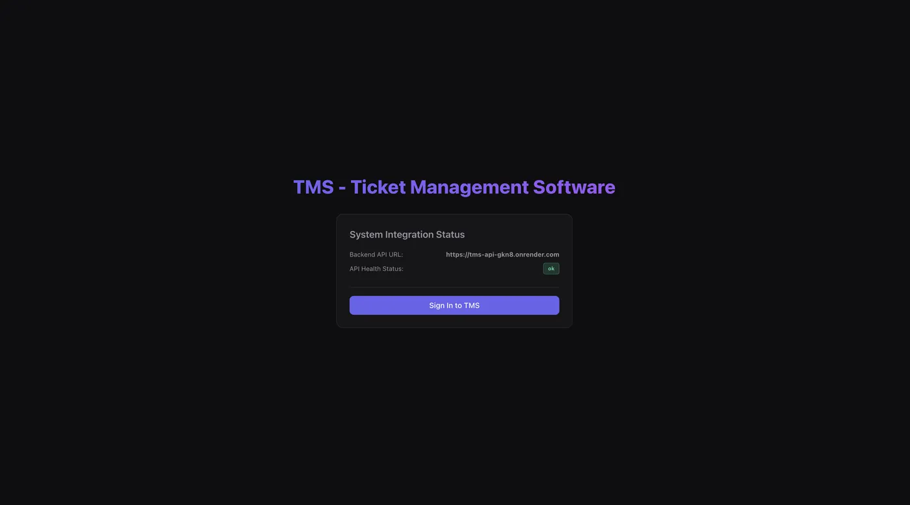
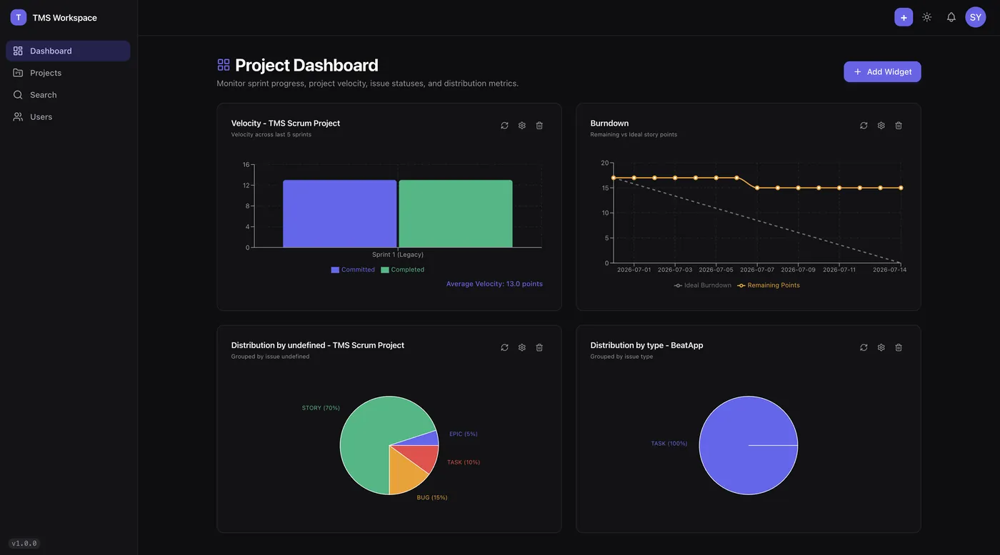
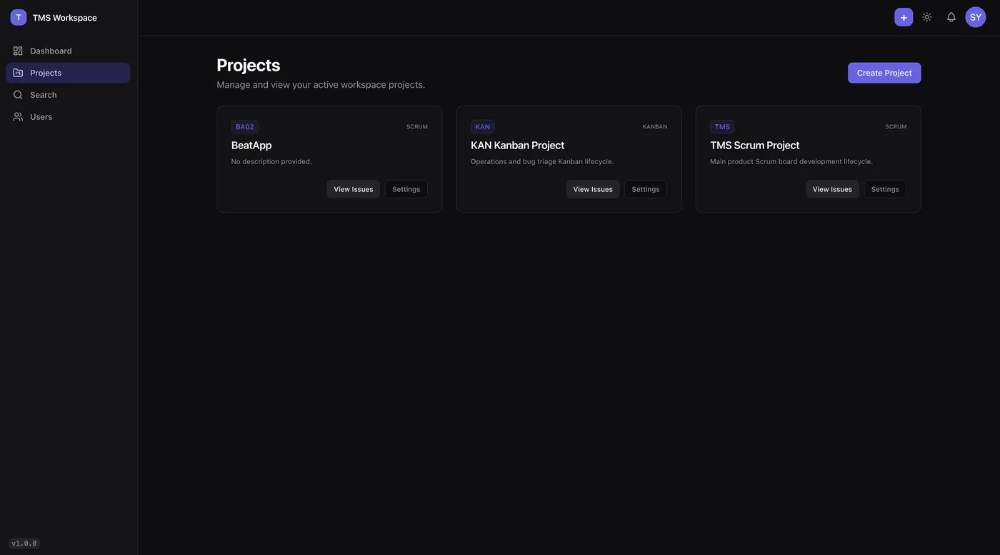
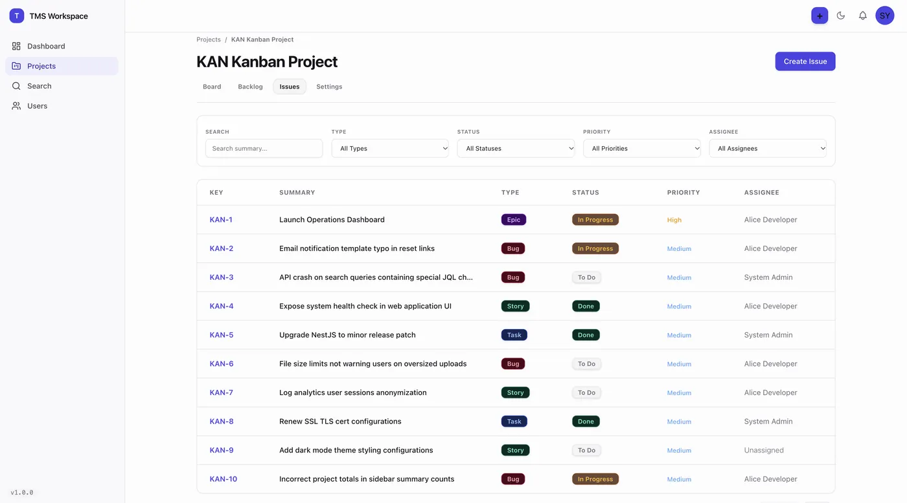
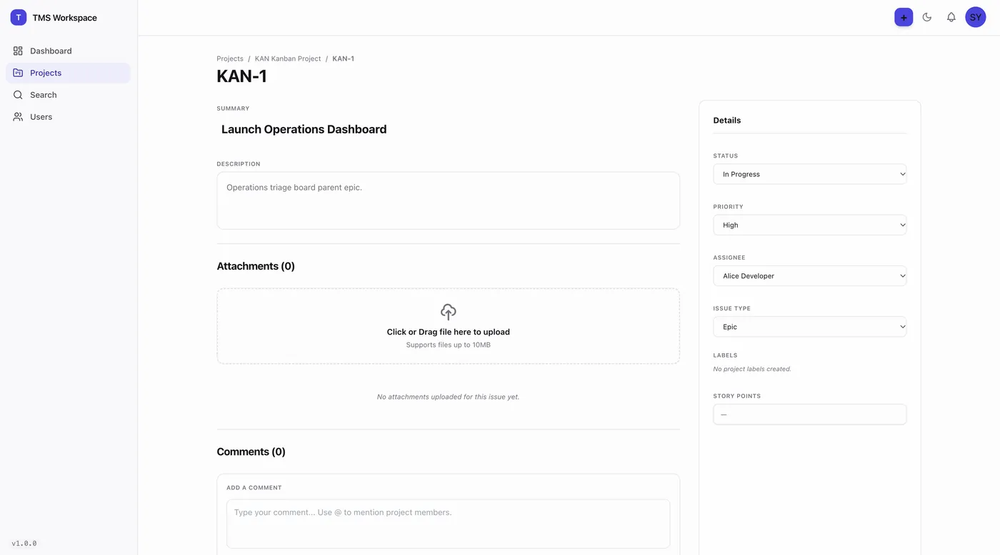
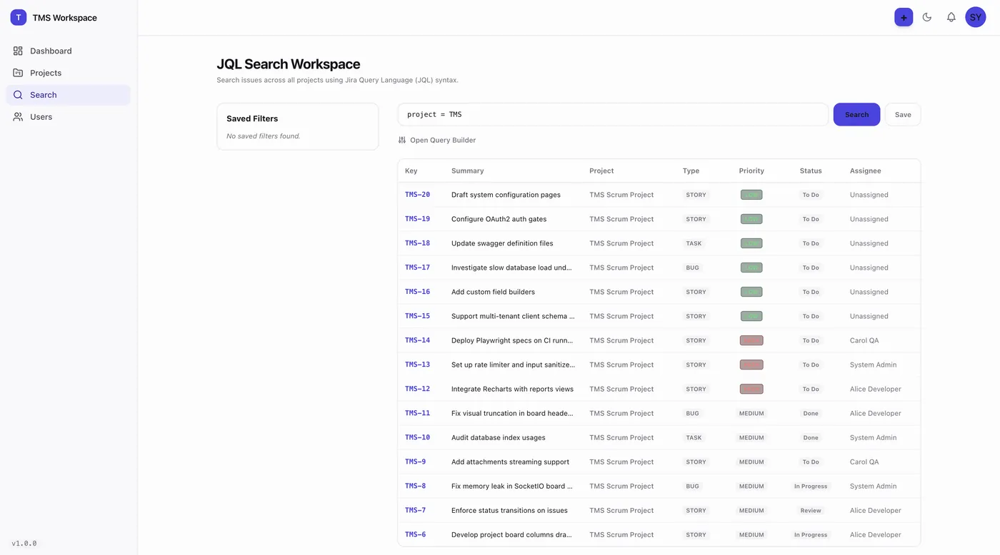
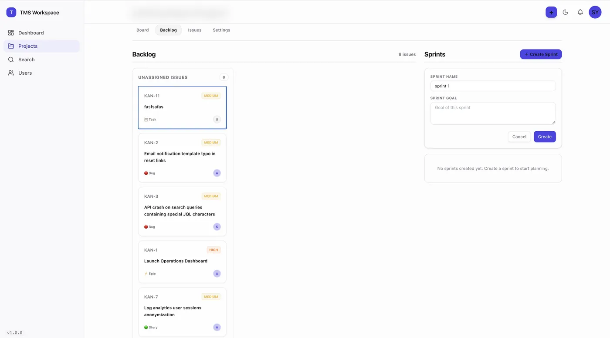
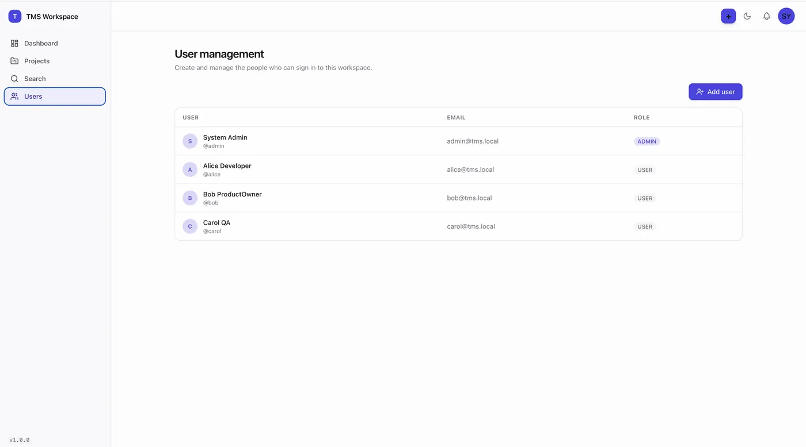

TMS — Ticket Management, built like Jira.
A full project-and-issue tracking platform — not a CRUD demo. Multi-project workspaces, sprint boards, custom workflows with guarded state transitions, realtime updates, a widget-based dashboard engine, audit logging, search, and notifications. Live with a Postgres database behind it.








click any image to enlarge · drag/scroll horizontally for more
Under the hood.
Domain modules for auth, projects, issues, boards, sprints, workflows, comments, labels, attachments, notifications, search, audit, dashboards, metrics, reports, and realtime — plus health, filters, and shared config. JWT auth, DTO validation, global exception filters, structured logging.
User · Membership · Project · ProjectCounter · Issue · Label · Workflow · Status · Transition · Board · Column · Sprint · Comment · Attachment · Notification · SavedFilter · Dashboard · Widget · AuditLog. Per-project issue numbering, relational integrity, migrations + seed under version control.
Issues move only through permitted Status→Transition paths defined per workflow; invalid moves are rejected server-side. Every change lands in the AuditLog — who, what, when, before/after.
A realtime module pushes board and issue changes to connected clients. The dashboard engine lets users compose their own widget grid — velocity, burndown, distribution — computed server-side by the metrics and reports modules.
Monorepo discipline: pnpm + Turborepo workspace with shared packages (@tms/db, @tms/shared, @tms/ui, @tms/config), conventional commits with commitlint + Husky, ESLint + Prettier + typecheck through the task runner, Docker Compose for Postgres + Mailhog, ADRs and docs checked in. This is the same engineering bar as a production team codebase.
web: tms-web-lime.vercel.app · api: tms-api-gkn8.onrender.com (health: ok)
Agent fleet, human gate.
The platform was scoped, built, and deployed by orchestrating parallel coding agents against a written plan: cheap models for schema, module scaffolding, and UI; a frontier model reviewing and steering; me owning architecture, the review gate, and the deploy. The docs/ suite (glossary, ADRs, phase guides) was authored so both agents and humans stay aligned.